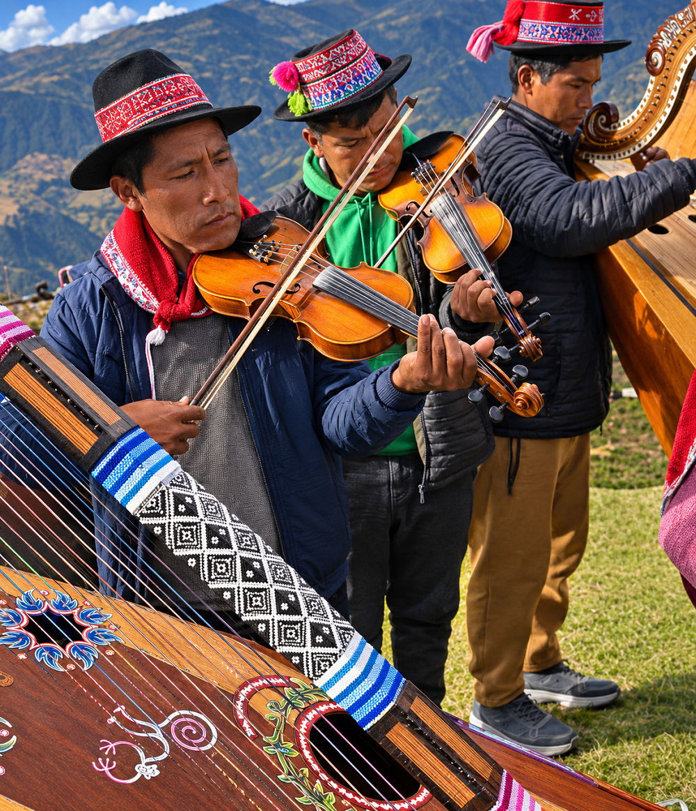

Huayno en Ayacucho
Apunte 028
Inicio > Blog Bitácora de un músico > Apunte 028
La música en su contexto social
En agosto de 1997, unos investigadores que grababan la Fiesta del Agua en Alcamenca, Ayacucho, documentaron un huayno interpretado con arpa y violín. Los músicos acompañaban la llegada de los participantes en un ritual comunitario de gestión del agua, mientras la caja de resonancia del arpa era golpeada con las manos para aportar percusión adicional. La grabación se publicó posteriormente en Traditional Music of Peru, Vol. 6: The Ayacucho Region, una recopilación etnográfica elaborada a partir de trabajos de campo realizados entre 1995 y 1998 (Ulfe, 2001).
La grabación documenta una configuración musical que difiere de las formaciones instrumentales comúnmente asociadas con el Ayacucho urbano. Su importancia no reside en una supuesta ausencia de mediación tecnológica, sino en la relación entre los instrumentos y las circunstancias de la interpretación. El arpa, el violín y la percusión acompañan una actividad colectiva cuya organización trasciende la propia música.
Sin embargo, esta configuración no puede considerarse representativa de todo el huayno (o wayno) ayacuchano. La región alberga diferentes tradiciones instrumentales, convenciones interpretativas y repertorios musicales, determinados por las diferencias entre provincias, comunidades y entornos sociales.
Por lo tanto, resulta más adecuado entender el conjunto como una configuración variable que como una agrupación fija de instrumentos.
Configuraciones regionales
En su estudio sobre el wayno ayacuchano, Carlos Huamán López (2006) describe las diferencias en las preferencias instrumentales de la región. Basándose en el trabajo de Rolando Carrasco Segovia, identifica la quena, el arpa y el violín en Lucanas y Puquio; la guitarra y el charango en Parinacochas y Paucar del Sara Sara; y la guitarra y el acordeón en zonas de Lucanas y Andamarca. También documenta formaciones de arpa y violín en repertorios rurales de Huamanga, Huanta, Cangallo, Víctor Fajardo y La Mar.
Estas distinciones no son absolutas. Los instrumentos circulan entre localidades y los intérpretes individuales participan en varias tradiciones. Sin embargo, demuestran que la denominación huayno ayacuchano abarca una amplia variedad de formaciones instrumentales.
El contraste entre las prácticas rurales y urbanas resulta particularmente significativo. En Huamanga, la guitarra, la mandolina, el charango y otros instrumentos de cuerda adquirieron posiciones destacadas dentro de la cultura musical urbana. La estudiantina, un modelo de conjunto asociado con presentaciones públicas organizadas, desarrolló un repertorio de huaynos, yaravíes y otras formas regionales.
Estas configuraciones también se entrecruzan con distinciones históricas entre las prácticas musicales indígenas y mestizas. Tales categorías no deberían considerarse identidades musicales fijas, pero han influido en el reconocimiento social de determinados instrumentos, repertorios y técnicas interpretativas.
El sonido regional del huayno surge de estas historias musicales entrelazadas, y no de un conjunto instrumental establecido de manera universal.
El arpa: afinación, bajos y articulación
El arpa ayacuchana ofrece evidencias particularmente claras de diferenciación instrumental regional.
En su detallada investigación sobre la tradición del arpa de Huamanga, Claude Ferrier (2016) identifica características relacionadas con los materiales de las cuerdas, los sistemas de afinación, el registro, la ornamentación y las técnicas de acompañamiento. Distingue el arpa asociada con Huamanga, encordada predominantemente con nailon, de las configuraciones del sur de Ayacucho, donde las cuerdas metálicas pueden ocupar la parte superior del instrumento.
Las prácticas de encordado no son, por ende, meras opciones constructivas intercambiables. Contribuyen a establecer diferencias de timbre y técnica que los músicos asocian con determinados estilos regionales.
Ferrier también documenta un procedimiento de afinación característico de la tradición de Huamanga. En ciertos repertorios ejecutados en tonalidades menores, los intérpretes elevan el séptimo grado dentro de una octava específica del instrumento, lo que permite establecer relaciones armónicas que, de otro modo, no estarían disponibles en un arpa diatónica afinada convencionalmente.
El arpista Otoniel Ccayanchira ofrece un ejemplo particularmente ilustrativo. Su instrumento, documentado por Ferrier, posee treinta y siete cuerdas que se extienden hasta un registro excepcionalmente grave. Esta configuración permite producir las notas graves necesarias para las progresiones armónicas características de su estilo. Sin embargo, sería incorrecto generalizar las dimensiones y la extensión de este instrumento particular a todas las arpas ayacuchanas.
Igualmente importante es la técnica de la mano izquierda. En la interpretación de Huamanga, las cuerdas graves pueden pulsarse con la palma orientada hacia afuera, produciendo un ataque seco y claramente definido. Estas figuras de bajo, conocidas como bordones, pueden introducir síncopas y variaciones rítmicas por debajo de la línea melódica.
El arpa hace mucho más que proporcionar soporte armónico. Su registro grave participa en la organización rítmica de la música, mientras que el agudo aporta material melódico y una ornamentación abundante.
Estas características pueden demostrarse mediante el análisis instrumental. No es necesario atribuir la construcción o la técnica del arpa a una supuesta necesidad, no verificada, de superar el viento, la altitud o la dispersión acústica en espacios abiertos.
Violín, melodía y relaciones dentro del conjunto
El violín ocupa un lugar importante en varias tradiciones rurales ayacuchanas, particularmente en asociación con el arpa. Sin embargo, su relación con el conjunto cambia según el repertorio y el contexto ceremonial.
El huayno grabado en Alcamenca en 1997 documenta una de estas asociaciones. Otras grabaciones de la misma colección muestran la presencia del arpa y el violín en celebraciones matrimoniales y en géneros ceremoniales relacionados. Estas interpretaciones demuestran la importancia de la combinación instrumental, sin implicar que los instrumentos desempeñen siempre funciones idénticas.
Las tradiciones violinísticas de Ayacucho también presentan diferencias regionales en cuanto a técnica y organización musical. Las investigaciones sobre el violín de Lucanas y la danza de tijeras, por ejemplo, documentan la ornamentación, las técnicas interpretativas transmitidas localmente y el importante papel del violinista en la dirección de la interpretación musical (Arce Sotelo, 2006). Estos hallazgos corresponden a un repertorio relacionado, pero distinto, y no pueden trasladarse sin más a todo el huayno rural.
Lo que sí puede establecerse es la flexibilidad de la posición del violín dentro del panorama musical ayacuchano. Puede formar parte de un pequeño conjunto instrumental, acompañar a cantantes o integrarse en una agrupación más amplia que incorpore instrumentos de cuerda pulsada y aerófonos.
Las relaciones musicales entre estos instrumentos no pueden determinarse únicamente a partir de su clasificación. Dependen del repertorio, de la tradición interpretativa y de las convenciones mantenidas por los músicos.
Voz, poesía y danza
El análisis instrumental del huayno queda incompleto si no se consideran sus dimensiones vocales y poéticas.
El huayno ayacuchano se interpreta en quechua y castellano, y sus letras abordan temas como el amor, la separación, la migración, los conflictos sociales y el apego a determinados lugares. Huamán López (2006) destaca la relación entre poesía, música y danza, y considera su interacción fundamental para el desarrollo histórico del género.
La voz puede estar acompañada por un conjunto de arpa y violín, por guitarras y charangos, o por la instrumentación, más elaborada, asociada con las agrupaciones urbanas. Las prácticas vocales también varían entre las distintas tradiciones regionales y sociales. La distinción entre el canto rural y el urbano no puede reducirse a una oposición universal entre la proyección nasal y un tono vocal cultivado.
La forma musical también permite una variación considerable. Las secciones melódicas repetidas y la fuga final, generalmente asociada con una mayor intensidad rítmica, ofrecen oportunidades para la elaboración instrumental y la participación colectiva. En la tradición del arpa de Huamanga, los pasajes ornamentales y las características figuras escalares pueden separar las repeticiones o articular las transiciones entre secciones (Ferrier, 2016).
En consecuencia, la relación entre voz e instrumentación implica mucho más que equilibrar líneas melódicas con acompañamiento. La disposición de las secciones, la repetición de los textos y las transiciones instrumentales contribuyen a la organización de la interpretación.
La percusión más allá del inventario instrumental
La grabación de Alcamenca ofrece un ejemplo particularmente útil de los límites de las descripciones instrumentales convencionales.
La documentación que acompaña la grabación especifica que la caja de resonancia del arpa se utilizaba como cajón, golpeándola con las manos a modo de tambor. La percusión resultante acompañaba al arpa y al violín durante una ceremonia comunitaria (Ulfe, 2001).
Este detalle no demuestra la existencia de una tradición percusiva diferenciada derivada del cajón afroperuano, ni tampoco el uso habitual de bancos, cajones u otros objetos improvisados en el huayno ayacuchano. Documenta algo más específico: la utilización ocasional del cuerpo de un instrumento existente como superficie adicional para producir sonido.
Desde un punto de vista organológico, el ejemplo es significativo. El arpa sigue siendo un cordófono cuando se pulsan sus cuerdas, pero su caja de resonancia puede funcionar simultáneamente como una superficie de percusión golpeada.
La clasificación del instrumento describe su mecanismo principal de producción sonora. No agota las posibilidades de su utilización durante la interpretación.
Estas prácticas sugieren que la morfología de los conjuntos debería investigarse tanto a través de la actividad musical observada como mediante inventarios de instrumentos.
Grabación y transformación musical
La distinción entre la música interpretada en celebraciones locales y la producida para su circulación comercial ha configurado la historia musical de Ayacucho. Sin embargo, la grabación no debería entenderse como la extracción, de su entorno natural, de un sonido originalmente auténtico.
Las grabaciones comerciales e institucionales han documentado una gran variedad de configuraciones instrumentales. Una grabación de la Estudiantina Típica Ayacucho, publicada en 1958 y conservada en el catálogo de Smithsonian Folkways, acredita la participación de arpa, dos guitarras, bandola, quena y violín. Su instrumentación ya difiere considerablemente de la pareja de arpa y violín grabada en Alcamenca varias décadas más tarde.
Estas diferencias no pueden explicarse únicamente por el entorno de grabación. También reflejan distintas tradiciones musicales, convenciones de conjunto y arreglos.
Las investigaciones sobre el huayno urbano ayacuchano han demostrado, además, la importancia de examinar la melodía, la armonía, el ritmo y el timbre como características musicales que cambian históricamente, en lugar de suponer que el género posee un único perfil acústico estable (Ramírez Pérez, 2020).
Las interpretaciones grabadas constituyen documentos valiosos, pero requieren una interpretación contextual. Un micrófono registra una configuración particular en un momento determinado. El sonido resultante depende de los músicos, los instrumentos, el repertorio, el lugar y el proceso de grabación.
Una grabación de campo no proporciona automáticamente un testimonio más auténtico que una grabación comercial. Cada una conserva evidencias de una situación musical diferente.
La morfología como relación
Las tradiciones musicales de Ayacucho demuestran las limitaciones de definir un conjunto únicamente a partir de los instrumentos que lo componen.
Una misma arpa puede funcionar como instrumento melódico y armónico, proporcionar un acompañamiento de bajos rítmicamente elaborado o contribuir a la percusión mediante su caja de resonancia. El violín participa en diferentes relaciones instrumentales según la práctica local. La voz, la danza y la actividad ceremonial transforman aún más la organización de la interpretación musical.
Estas diferencias no son desviaciones respecto de un supuesto sonido regional uniforme. Forman parte de la constitución histórica de la diversidad musical ayacuchana.
Comprender el huayno fuera del estudio de grabación requiere algo más que identificar el sonido de instrumentos sin amplificación. Exige examinar las interacciones entre la construcción material, la técnica instrumental, el repertorio, el contexto interpretativo y la organización social.
El conjunto no es simplemente una agrupación de objetos musicales. Es un entramado de relaciones que se establecen y reproducen continuamente a través de la interpretación.
Lecturas
- Arce Sotelo, Manuel. 2006. La danza de tijeras y el violín de Lucanas. Lima: Instituto de Etnomusicología, Pontificia Universidad Católica del Perú / Instituto Francés de Estudios Andinos.
- Ferrier, Claude. 2016. "El arpa en Huamanga: ¿tradición y estilo musical acordes a los retos del siglo XXI?" TRANS: Revista Transcultural de Música 20.
- Huamán López, Carlos. 2006. "El wayno ayacuchano como tradición oral, poética, musical y dancística." Latinoamérica. Revista de Estudios Latinoamericanos 42: 79-106.
- Ramírez Pérez, Raúl Ladislao. 2020. Las características musicales del huayno tradicional ayacuchano urbano. Tesis de licenciatura en Música, Pontificia Universidad Católica del Perú.
- Folkways Records. 1958. "Huayno (Peru)." Interpretado por Estudiantina Típica Ayacucho. En Dances of the World's Peoples, Vol. 3: Caribbean and South America, pista 10. FW06503.
- Smithsonian Folkways Recordings. 2001. Traditional Music of Peru, Vol. 6: The Ayacucho Region. SFW40449.
Video. Del usuario de YouTube Cepa Studios.